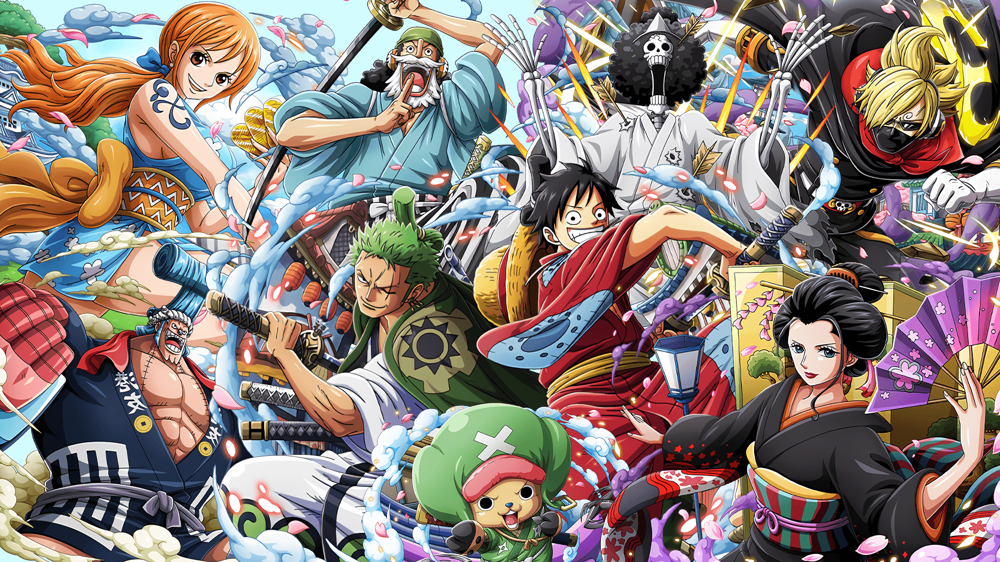

| Top# | Sauce | Cover Picture |
|---|---|---|
| 1 | One Piece
One Piece is a Japanese manga series written and illustrated by Eiichiro Oda. It has been serialized in Shueisha's shōnen manga magazine Weekly Shōnen Jump since July 1997, with its individual chapters compiled into 100 tankōbon volumes as of September 2021. Read More |
 |
| 2 | Devil Man CryBaby
Akira's best friend tells him that ancient demons have returned to take back the world from humans and suggests that he unite with a demon. Akira successfully does that, transforming into Devilman a being with a demon's powers but who retains the soul of a human. This sends Akira into a brutal, degenerate war against evil. With fear of demons gripping the world, humanity devolves into paranoia and violence and Akira sets out to save other demon-human hybrids like himself.. Read More |
|
| 3 | Death Note
Death Note is a Japanese manga series written by Tsugumi Ohba and illustrated by Takeshi Obata. The story follows Light Yagami, a teen genius who discovers a mysterious notebook: the "Death Note",. Read More |
|
| 4 | Attack On Titan
Attack on Titan (Japanese: 進撃の巨人, Hepburn: Shingeki no Kyojin, lit. "The Advancing Giants") is a Japanese manga series written and illustrated by Hajime Isayama. It is set in a world where humanity lives inside cities surrounded by three enormous walls that protect them from the gigantic man-eating humanoids referred to as Titan. Read More |
|
| 5 | Goblin Slayer
A band of adventurers, including a human priestess, an elf archer, a dwarf shaman and a lizardman priest, follow a famous goblin hunter on a quest to destroy the hordes of aggressive goblins that threaten to ravage the land. Read More |